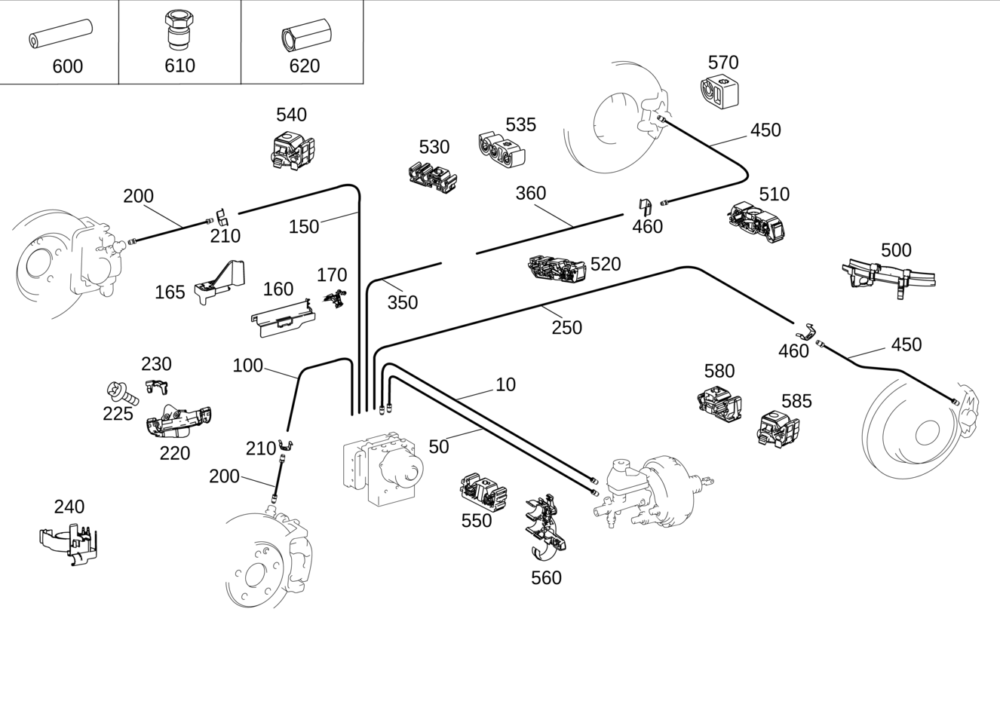

| № | Артикул | Название | Кол. | Примечание |
|---|---|---|---|---|
| 10 | A 166 420 25 26 | Тормозная трубка (BREMSLEITUNG) | 1 | ОТ ГЛАВНОГО ЦИЛИНДРА К ШТУЦЕРУ "PC" ГИДРАВЛИЧЕСКОГО БЛОКА |
| 10 | A 166 420 53 26 | Тормозная трубка (BREMSLEITUNG) | 1 | ОТ ГЛАВНОГО ЦИЛИНДРА К ШТУЦЕРУ "PC" ГИДРАВЛИЧЕСКОГО БЛОКА |
| 10 | A 166 420 79 26 | Тормозная трубка (BREMSLEITUNG) | 1 | ОТ ГЛАВНОГО ЦИЛИНДРА К ШТУЦЕРУ "PC" ГИДРАВЛИЧЕСКОГО БЛОКА |
| 10 | A 166 420 79 26 | Тормозная трубка (BREMSLEITUNG) | 1 | ОТ ГЛАВНОГО ЦИЛИНДРА К ШТУЦЕРУ "PC" ГИДРАВЛИЧЕСКОГО БЛОКА |
| 10 | A 166 420 06 28 | Тормозная трубка (BREMSLEITUNG) | 1 | ОТ ГЛАВНОГО ЦИЛИНДРА К ШТУЦЕРУ "PC" ГИДРАВЛИЧЕСКОГО БЛОКА |
| 10 | A 166 420 26 26 | Тормозная трубка (BREMSLEITUNG) | 1 | ОТ ГЛАВНОГО ЦИЛИНДРА К ШТУЦЕРУ "PC" ГИДРАВЛИЧЕСКОГО БЛОКА |
| 10 | A 166 420 67 26 | Тормозная трубка (BREMSLEITUNG) | 1 | ОТ ГЛАВНОГО ЦИЛИНДРА К ШТУЦЕРУ "PC" ГИДРАВЛИЧЕСКОГО БЛОКА |
| 10 | A 166 420 93 26 | Тормозная трубка (BREMSLEITUNG) | 1 | ОТ ГЛАВНОГО ЦИЛИНДРА К ШТУЦЕРУ "PC" ГИДРАВЛИЧЕСКОГО БЛОКА |
| 10 | A 166 420 79 26 | Тормозная трубка (BREMSLEITUNG) | 1 | ОТ ГЛАВНОГО ЦИЛИНДРА К ШТУЦЕРУ "PC" ГИДРАВЛИЧЕСКОГО БЛОКА |
| 10 | A 166 420 93 26 | Тормозная трубка (BREMSLEITUNG) | 1 | ОТ ГЛАВНОГО ЦИЛИНДРА К ШТУЦЕРУ "PC" ГИДРАВЛИЧЕСКОГО БЛОКА |
| 10 | A 166 420 08 28 | Тормозная трубка (BREMSLEITUNG) | 1 | ОТ ГЛАВНОГО ЦИЛИНДРА К ШТУЦЕРУ "PC" ГИДРАВЛИЧЕСКОГО БЛОКА |
| 10 | A 166 420 11 28 | Тормозная трубка (BREMSLEITUNG) | 1 | ОТ ГЛАВНОГО ЦИЛИНДРА К ШТУЦЕРУ "PC" ГИДРАВЛИЧЕСКОГО БЛОКА |
| 10 | A 166 420 93 26 | Тормозная трубка (BREMSLEITUNG) | 1 | ОТ ГЛАВНОГО ЦИЛИНДРА К ШТУЦЕРУ "PC" ГИДРАВЛИЧЕСКОГО БЛОКА |
| 50 | A 340 420 16 29 | Провод | 1 | ОТ ГЛАВНОГО ЦИЛИНДРА К ШТУЦЕРУ "SC" ГИДРАВЛИЧЕСКОГО БЛОКА |
| 50 | A 166 420 57 26 | Тормозная трубка (BREMSLEITUNG) | 1 | ОТ ГЛАВНОГО ЦИЛИНДРА К ШТУЦЕРУ "SC" ГИДРАВЛИЧЕСКОГО БЛОКА |
| 50 | A 166 420 07 28 | Тормозная трубка (BREMSLEITUNG) | 1 | ОТ ГЛАВНОГО ЦИЛИНДРА К ШТУЦЕРУ "SC" ГИДРАВЛИЧЕСКОГО БЛОКА |
| 50 | A 166 420 12 28 | Тормозная трубка (BREMSLEITUNG) | 1 | ОТ ГЛАВНОГО ЦИЛИНДРА К ШТУЦЕРУ "SC" ГИДРАВЛИЧЕСКОГО БЛОКА |
| 50 | A 166 420 12 28 | Тормозная трубка (BREMSLEITUNG) | 1 | ОТ ГЛАВНОГО ЦИЛИНДРА К ШТУЦЕРУ "SC" ГИДРАВЛИЧЕСКОГО БЛОКА |
| 50 | A 166 420 27 26 | Тормозная трубка (BREMSLEITUNG) | 1 | ОТ ГЛАВНОГО ЦИЛИНДРА К ШТУЦЕРУ "SC" ГИДРАВЛИЧЕСКОГО БЛОКА |
| 50 | A 166 420 68 26 | Тормозная трубка (BREMSLEITUNG) | 1 | ОТ ГЛАВНОГО ЦИЛИНДРА К ШТУЦЕРУ "SC" ГИДРАВЛИЧЕСКОГО БЛОКА |
| 50 | A 166 420 94 26 | Тормозная трубка (BREMSLEITUNG) | 1 | ОТ ГЛАВНОГО ЦИЛИНДРА К ШТУЦЕРУ "SC" ГИДРАВЛИЧЕСКОГО БЛОКА |
| 50 | A 166 420 57 26 | Тормозная трубка (BREMSLEITUNG) | 1 | ОТ ГЛАВНОГО ЦИЛИНДРА К ШТУЦЕРУ "SC" ГИДРАВЛИЧЕСКОГО БЛОКА |
| 50 | A 166 420 94 26 | Тормозная трубка (BREMSLEITUNG) | 1 | ОТ ГЛАВНОГО ЦИЛИНДРА К ШТУЦЕРУ "SC" ГИДРАВЛИЧЕСКОГО БЛОКА |
| 50 | A 166 420 09 28 | Тормозная трубка (BREMSLEITUNG) | 1 | ОТ ГЛАВНОГО ЦИЛИНДРА К ШТУЦЕРУ "SC" ГИДРАВЛИЧЕСКОГО БЛОКА |
| 50 | A 166 420 14 28 | Тормозная трубка | 1 | ОТ ГЛАВНОГО ЦИЛИНДРА К ШТУЦЕРУ "SC" ГИДРАВЛИЧЕСКОГО БЛОКА |
| 50 | A 166 420 57 26 | Тормозная трубка (BREMSLEITUNG) | 1 | ОТ ГЛАВНОГО ЦИЛИНДРА К ШТУЦЕРУ "SC" ГИДРАВЛИЧЕСКОГО БЛОКА |
| 50 | A 166 420 14 28 | Тормозная трубка | 1 | ОТ ГЛАВНОГО ЦИЛИНДРА К ШТУЦЕРУ "SC" ГИДРАВЛИЧЕСКОГО БЛОКА |
| 50 | A 166 420 94 26 | Тормозная трубка (BREMSLEITUNG) | 1 | ОТ ГЛАВНОГО ЦИЛИНДРА К ШТУЦЕРУ "SC" ГИДРАВЛИЧЕСКОГО БЛОКА |
| 100 | A 238 428 00 00 | Тормозная трубка (BREMSLEITUNG) | 1 | РЕМОНТНЫЙ ТРУБОПРОВОД ОТ ГИДРАВЛИЧЕСКОГО БЛОКА К ПЕРЕДНЕМУ ЛЕВОМУ КОЛЕСУ; 5000 MM |
| 150 | A 238 428 00 00 | Тормозная трубка (BREMSLEITUNG) | 1 | РЕМОНТНЫЙ ТРУБОПРОВОД ОТ ГИДРАВЛИЧЕСКОГО БЛОКА К ПЕРЕДНЕМУ ПРАВОМУ КОЛЕСУ; 5000 MM |
| 160 | A 166 545 58 40 | Держатель (HALTER) | 1 | К ЛОНЖЕРОНУ СЛЕВА |
| 160 | A 166 545 59 40 | Держатель (HALTER) | 1 | К ЛОНЖЕРОНУ СПРАВА |
| 165 | A 166 545 01 00 | Держатель (HALTER) | 1 | НА ДЕРЖАТЕЛЕ СЛЕВА |
| 165 | A 166 545 02 00 | Держатель (HALTER) | 1 | К КРОНШТЕЙНУ СПРАВА |
| 170 | A 166 545 34 40 | Держатель (HALTER) | 1 | СЛЕВА |
| 170 | A 166 545 35 40 | Держатель (HALTER) | 1 | СПРАВА |
| 200 | A 166 420 03 48 | Тормозной шланг (BREMSSCHLAUCH) | 1 | СПЕРЕДИ СЛЕВА |
| 200 | A 166 420 03 48 | Тормозной шланг (BREMSSCHLAUCH) | 1 | СПЕРЕДИ СПРАВА |
| 210 | A 000 428 06 73 | Удерживающая пружина (HALTEFEDER) | 1 | ТОРМОЗНОЙ ШЛАНГ СЛЕВА |
| 210 | A 000 428 06 73 | Удерживающая пружина (HALTEFEDER) | 1 | ТОРМОЗНОЙ ШЛАНГ СПРАВА |
| 220 | A 166 421 13 94 | Держатель (HALTER) | 1 | ТОРМОЗНОЙ ШЛАНГ СЛЕВА |
| 220 | A 166 421 14 94 | Держатель (HALTER) | 1 | ТОРМОЗНОЙ ШЛАНГ СПРАВА |
| 225 | N 000000 006341 | Винт с 6-гр. глвк (SECHSRUNDSCHRAUBE) | 2 | КРЕПЛЕН. КРОНШТ. СЛЕВА |
| 225 | N 000000 006341 | Винт с 6-гр. глвк (SECHSRUNDSCHRAUBE) | 2 | КРЕПЛЕНИЕ КРОНШТ. СПРАВА |
| 230 | A 000 991 34 71 | Крепежная клипса (BEFESTIGUNGSCLIP) | 2 | ТОРМОЗНОЙ ШЛАНГ НА КРОНШТЕЙНЕ, СЛЕВА |
| 230 | A 000 991 34 71 | Крепежная клипса (BEFESTIGUNGSCLIP) | 2 | ТОРМОЗНОЙ ШЛАНГ НА КРОНШТЕЙНЕ, СПРАВА |
| 240 | A 166 545 47 40 | Держатель (HALTER) | 1 | ТОРМОЗ. ТРУБОПРОВ. НА АМОРТ. СТОЙКЕ СЛЕВА |
| 240 | A 166 545 48 40 | Держатель (HALTER) | 1 | ТОРМОЗНОЙ ТРУБОПРОВОД НА ПРАВОЙ АМОРТИЗАЦИОННОЙ СТОЙКЕ |
| 250 | A 238 428 00 00 | Тормозная трубка (BREMSLEITUNG) | 1 | ГИДРАВЛИЧЕСКИЙ БЛОК К ЗАДНЕМУ ЛЕВОМУ КОЛЕСУ; 5000 MM |
| 350 | A 238 428 00 00 | Тормозная трубка (BREMSLEITUNG) | 1 | РЕМОНТНЫЙ ТРУБОПРОВОД ОТ ГИДРАВЛИЧЕСКОГО БЛОКА К РАЗЪЁМУ; 5000 MM |
| 360 | A 238 428 00 00 | Тормозная трубка (BREMSLEITUNG) | 1 | РЕМОНТНЫЙ ТРУБОПРОВОД ОТ РАЗЪЁМА К ЗАДНЕМУ ПРАВОМУ КОЛЕСУ; 5000 MM |
| 450 | A 166 420 04 48 | Тормозной шланг (BREMSSCHLAUCH) | 2 | СЗАДИ СЛЕВА И СПРАВА |
| 460 | A 000 428 06 73 | Удерживающая пружина (HALTEFEDER) | 2 | СЗАДИ СЛЕВА И СПРАВА |
| 500 | A 166 423 05 23 | Держатель (HALTER) | 1 | ТОРМОЗНОЙ ШЛАНГ НА ПРОДОЛЬНОМ РЫЧАГЕ СЛЕВА |
| 500 | A 166 423 07 23 | Держатель (HALTER) | 1 | ТОРМОЗНОЙ ШЛАНГ НА ПРОДОЛЬНОМ РЫЧАГЕ СЛЕВА |
| 500 | A 166 423 06 23 | Держатель (HALTER) | 1 | ТОРМОЗНОЙ ШЛАНГ НА ПРОДОЛЬНОМ РЫЧАГЕ СПРАВА |
| 500 | A 166 423 08 23 | Держатель (HALTER) | 1 | ТОРМОЗНОЙ ШЛАНГ НА ПРОДОЛЬНОМ РЫЧАГЕ СПРАВА |
| 510 | A 001 995 97 77 | Держатель трубопровода (LEITUNGSHALTER) | 3 | ТОРМОЗ. ТРУБОПР. И РЕГЕНЕРИР. ТРУБОПРОВ. |
| 520 | A 001 995 98 77 | Держатель трубопровода (LEITUNGSHALTER) | 3 | ТОРМОЗНАЯ ТРУБКА НА ПЕРЕДНЕМ ЛОНЖЕРОНЕ |
| 520 | A 000 995 50 00 | Крепеж (трубо)провода (LEITUNGSBEFESTIGER) | 3 | ТОРМОЗНАЯ ТРУБКА НА ПЕРЕДНЕМ ЛОНЖЕРОНЕ |
| 530 | A 002 995 66 77 | Крепеж (трубо)провода (LEITUNGSBEFESTIGER) | 2 | ТОПЛИВОПРОВОДЫ И ТОРМОЗНЫЕ ТРУБОПРОВОДЫ НА ЛЕВОМ ЛОНЖЕРОНЕ |
| 535 | A 000 995 76 14 | Крепеж (трубо)провода (LEITUNGSBEFESTIGER) | 1 | ТОПЛИВОПРОВОДЫ И ТОРМОЗНЫЕ ТРУБОПРОВОДЫ НА ЛЕВОМ ЛОНЖЕРОНЕ |
| 535 | A 000 995 76 14 | Крепеж (трубо)провода (LEITUNGSBEFESTIGER) | 3 | ТОПЛИВОПРОВОДЫ И ТОРМОЗНЫЕ ТРУБОПРОВОДЫ НА ЛЕВОМ ЛОНЖЕРОНЕ |
| 535 | A 000 995 76 14 | Крепеж (трубо)провода (LEITUNGSBEFESTIGER) | 1 | ПРОСТАВКА ТОРМОЗНЫХ ТРУБОПРОВОДОВ НА ГИДРАВЛИЧЕСКОМ БЛОКЕ |
| 540 | A 002 995 53 77 | Держатель трубопровода (LEITUNGSHALTER) | 11 | ТОРМОЗНАЯ ТРУБКА ПЕРЕДНЯЯ ПРАВАЯ |
| 540 | A 002 995 53 77 | Держатель трубопровода (LEITUNGSHALTER) | 12 | ТОРМОЗНАЯ ТРУБКА ПЕРЕДНЯЯ ПРАВАЯ |
| 540 | A 002 995 53 77 | Держатель трубопровода (LEITUNGSHALTER) | 12 | ТОРМОЗНАЯ ТРУБКА ПЕРЕДНЯЯ ПРАВАЯ |
| 540 | A 002 995 53 77 | Держатель трубопровода (LEITUNGSHALTER) | 10 | ТОРМОЗНАЯ ТРУБКА ПЕРЕДНЯЯ ПРАВАЯ |
| 540 | A 002 995 15 77 | Держатель трубопровода (LEITUNGSHALTER) | 12 | ТОРМОЗНАЯ ТРУБКА ПЕРЕДНЯЯ ПРАВАЯ |
| 550 | A 001 995 39 77 | Держатель трубопровода (LEITUNGSHALTER) | 2 | ТОРМОЗН. ТРУБОПРОВОД НА ПЕРЕГОРОДКЕ |
| 550 | A 004 995 82 77 | Крепеж (трубо)провода (LEITUNGSBEFESTIGER) | 2 | ТОРМОЗН. ТРУБОПРОВОД НА ПЕРЕГОРОДКЕ |
| 560 | A 003 995 30 77 | Крепеж (трубо)провода (LEITUNGSBEFESTIGER) | 1 | |
| 570 | A 001 995 99 77 | Держатель трубопровода (LEITUNGSHALTER) | 4 | СЗАДИ СПРАВА |
| 580 | A 003 995 18 77 | Крепеж (трубо)провода (LEITUNGSBEFESTIGER) | 3 | ТОРМОЗ. ТРУБОПР. И РЕГЕНЕРИР. ТРУБОПРОВ. |
| 580 | A 003 995 18 77 | Крепеж (трубо)провода (LEITUNGSBEFESTIGER) | 3 | ТОРМОЗ. ТРУБОПР. И РЕГЕНЕРИР. ТРУБОПРОВ. |
| 585 | A 002 995 53 77 | Держатель трубопровода (LEITUNGSHALTER) | 2 | ТОРМОЗНАЯ ТРУБКА ЗАДНЕГО ЛЕВОГО КОЛЕСА |
| 600 | A 201 476 11 26 | Шланг (SCHLAUCH) | NB | К ТОРМ.ТРУБОПРОВОДУ; 4.5X3 MM |
| 600 | A 230 476 87 26 | Шланг (SCHLAUCH) | NB | К ТОРМ.ТРУБОПРОВОДУ; 7,3 X 3 MM |
| 610 | A 000 428 04 72 | Полый болт (UEBERWURFSCHRAUBE) | NB | M10X1 |
| 620 | A 121 429 01 34 | 6-гр. распорный элемент (SECHSKANT-ABSTANDSELEMENT) | NB | M10 |
Позиций: 80 · подписано на схемах: 80 · колесо — плавный зум в курсор, перетаскивание — пан, двойной клик — зум, клик по артикулу — скопировать.